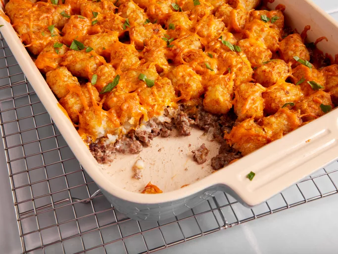

<!DOCTYPE html>
<html lang="en">
<head>
    <meta charset="UTF-8">
    <title>Tater Tot Casserole</title>
</head>
</html>
<body>
    <h1>Tater Tot Casserole Recipe</h1>
    <p><h3>This is a classic tater tot casserole recipe. It's a quick and easy meal to dump & throw in the oven!</h3></p>
    
    <h4><ul>Ingredients!</ul></h4>
        <li>1 lb. ground beef</li>
        <li>1 can of cream of mushroom soup</li>
        <li>1 bag of frozen tater tots</li>
        <li>1 cup of shredded cheddar cheese</li>
        <li>1/2 cup of milk</li>
        <li>Salt and pepper to taste</li>
    <h4><ol>Directions!</ol></h4>
        <li>Preheat oven to 350 degrees F</li>
        <li>Start by browning the ground beef in a skillet over medium heat</li>
        <li>Once the beef is browned, drain the excess fat</li>
        <li>Add the cream of mushroom soup, milk, salt, and pepper to the skillet and stir until combined</li>
        <li>Transfer the beef mixture to a baking dish</li>
        <li>Top the beef mixture with a layer of tater tots</li>
        <li>Bake in the oven for 30 minutes</li>
        <li>Remove from oven and sprinkle shredded cheddar cheese on top</li>
        <li>Return to oven and bake for an additional 10 minutes, or until cheese is melted</li>
        <li>Enjoy your tater tot casserole!</li>
    <p><a href="../index.html">Back to Home</a></p>
</body>